Other Projects
 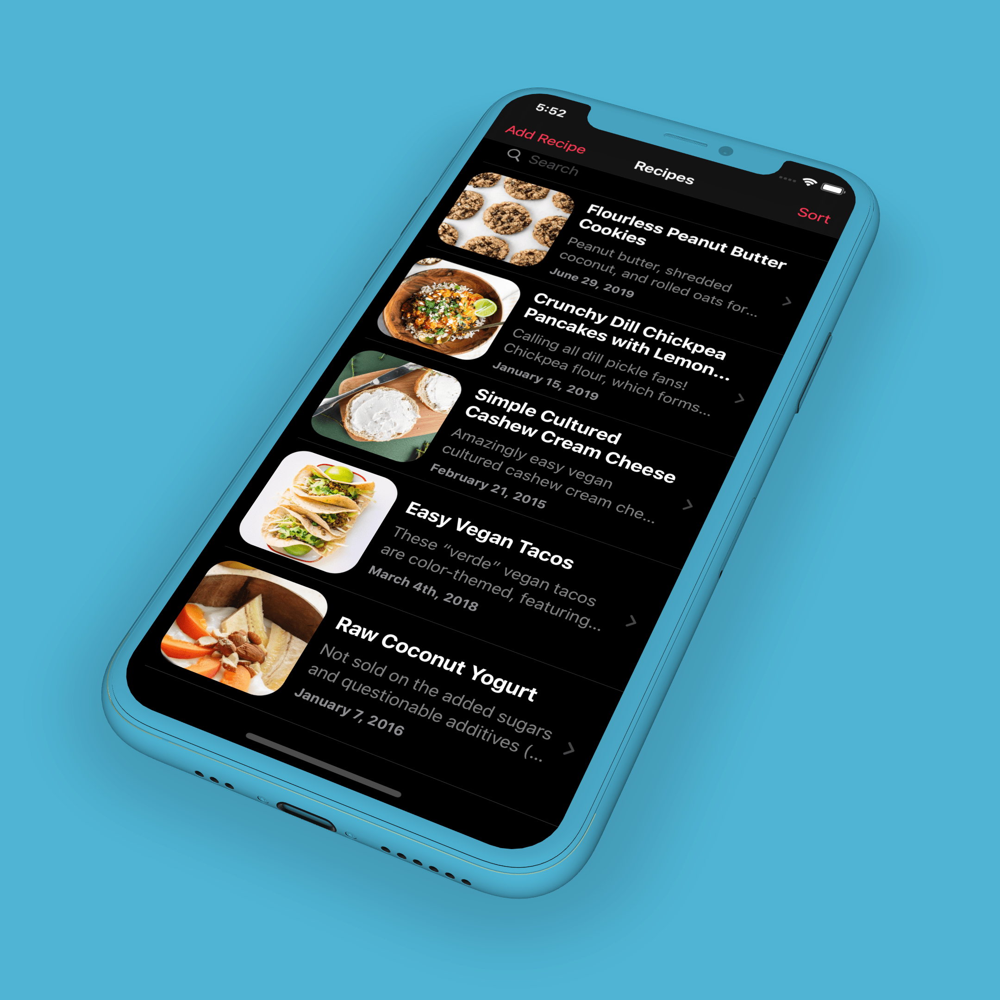
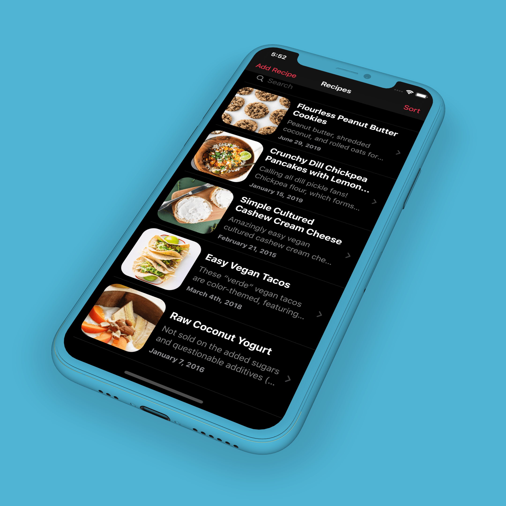
While not a digital product, this project demonstrates how I think about users. This project was designed as a soldering kit, a macro pad or numeric keyboard, and a keyboard firmware learning and experimentation tool. There is a lot packed into this little device!
For context, on the side, I run an all volunteer 501(c)(3) nonprofit organization called cKeys. Our mission:
Using keyboards and other input devices, cKeys educates, inspires, and empowers people to design, build and/or repair their world.
Ultimately, my goal is spread knowledge and inspire confidence in electronic making and repair. Keyboards are an accessible and relatively simple projects to teach. And the finished products are utilitarian and practical (as opposed to the likes of learning how to build an Arduino toilet flushing device). I believe that basic electronics and soldering knowledge should be in everyone’s toolkit for a well balanced DIY life.
One of the ways I spread this knowledge is through teaching workshops on soldering and building keyboards. Over the past three years, we have iterated on many designs. Finally, over the last six months, I have begun to fine tune our successful kits. One of those kits is the Dora QMK Explorer.
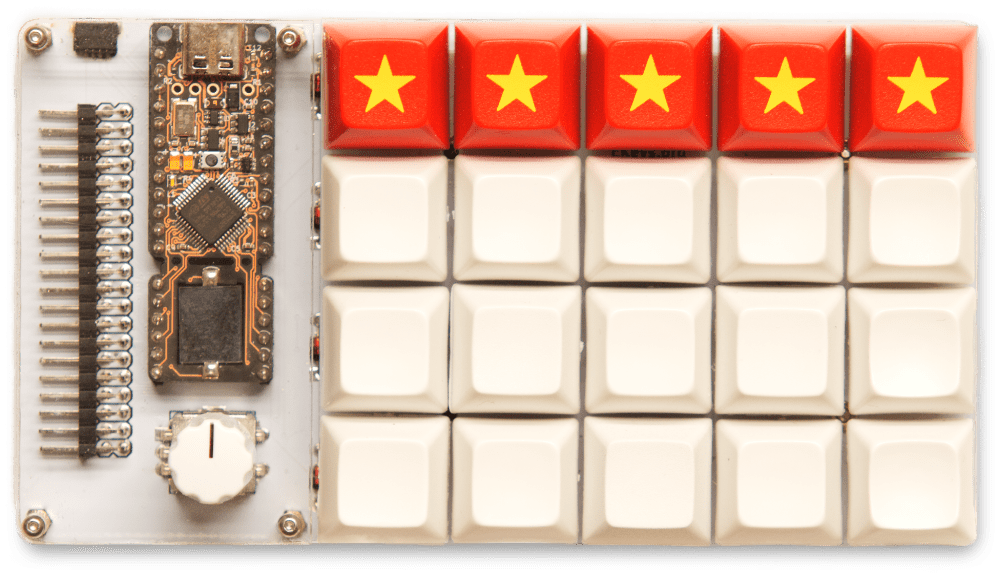Version 1 of the Dora QMK Explorer.
My roles throughout the life of this keyboard have been to design the schematic and PCB, request feedback, iterate on the design, print the final PCBs, pre-program the microcontrollers, collect all components for the kits, organize and train volunteer assistants, teach two workshops, and to digest the live and post workshop survey feedback. I will walk through these difference processes as they relate to design as well as discuss some of the improvements for the upcoming revision of this kit.
The goal of designing this kit was to offer a desirable, relatively inexpensive, and repeatable keyboard soldering experience.
Up to the point of this design, we had created new PCB designs for nearly every workshop we had taught. Not only was this a difficult cadence for our all-volunteer run nonprofit to maintain, it was also a more expensive approach. As long as we kept drastically changing our kit designs, we weren’t able to standardize parts nor order in bulk to save costs.
So I set out to meet these business requirements by making a kit that could be used and expanded in different ways depending on the workshop. It would mean we could teach different styles of workshops (both soldering and coding) using one kit as our platform.
Given that I teach soldering directly to our users, often with new and “beta” designs, these workshops function much like unofficial UX research and user testing.
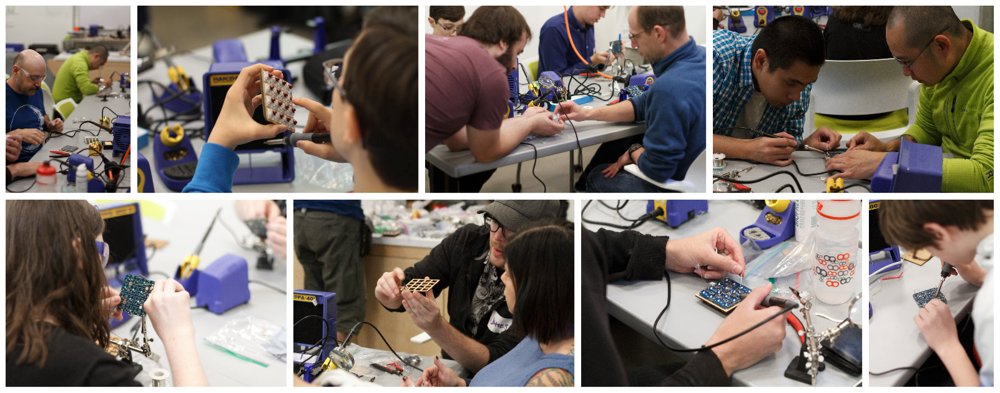An example of a cKeys workshop.
Most of the workshops that I have taught have been 2.5 hours long with 15 or fewer attendees and 3 or 4 assistant volunteers. It is a great opportunity to observe what works and what doesn’t when it comes to pedagogy and kit design.
One of the biggest design challenges that I have faced over the past couple of years is the dichotomy between attendees that just “get it” and those that don’t. Some attendees blast through the workshops without any issues or concerns (even if it is their first time soldering) whereas others struggle to grasp the basic procedure for wetting solder with a soldering iron until the workshop is nearly complete (at least they get it by the end!). I am constantly thinking of ways to improve the process so that we don’t slow down the “natural” solderers while at the same time leaving no one behind.
Each workshop is a lesson in usability and results in iteration and change for the next workshop. I also send out surveys after workshops to further collect feedback. All of this live and survey feedback culminated in the design of the Dora.
Most of the mistakes we see in workshops are fixable. I or another volunteer can get someone back on track even if they mess something up. But the costliest mistake that occurred multiple times in previous PCB kits was specific to the timing of soldering the microcontroller.
The microcontroller is the “brains” of keyboard. The programmable microcontroller gets flashed with firmware (in our case we use an open-source project called QMK), which then allows it to communicate via USB to a desktop or mobile device. If the brains get messed up, we usually couldn't fix it.
And the main way the microcontroller would end up in bad shape was when an attendee would complete important steps out of order. Usually we would catch these mistakes before they went too far. And we would warn people multiple times not to make this mistake. But because the kits, up to that point, had not designed the mistake away, it wasn’t the attendees fault. It was our kit design.
Put simply, the microcontroller is soldered to header pins which are soldered to the PCB. But our kits were originally designed to house the microcontroller under switches to conserve space. Because of this, it was important to first solder the header pins to the PCB, then solder the switches that were only accessible underneath the microcontroller, and then solder the microcontroller in to place over top of the fresh solder joints from the switches.
But often enough, the microcontroller would be soldered on at the same time as soldering the header pins to the PCB. Which then meant that the two switches that needed to be soldered underneath of the microcontroller could no longer be accessed. And removing header pins in a timely fashion during a workshop was near impossible. So often times, we just swapped out the board and had someone start over with extra help from volunteer assistants.
The number one inspiration for the Dora keyboard kit was that mistake. The solution was to move the microcontroller off to the side and away from the switches. In doing so, it would ensure that no one could make this costly and time consuming mistake again.
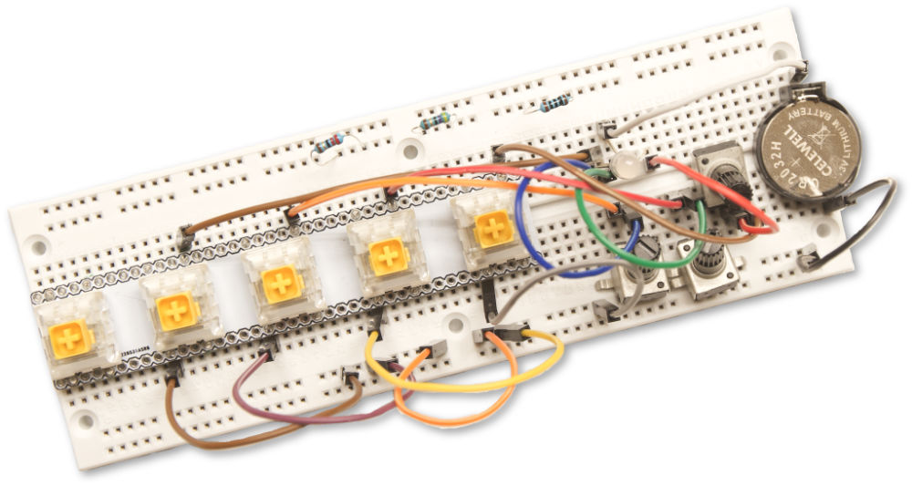The equivalant of wireframing in electronics?
But I couldn’t settle for this solution. As soon as I sketched out what a small keyboard kit might look like with the microcontroller on the side, I saw an opportunity. With conserving space and compactness not being the main design drivers anymore, I saw an opportunity to add more stuff!
The key was adding value and not just stuff because there was more space to fill in. After a few undocumented iterations, I had a basic design that could answer more than just the “why?” for separating the microcontroller from the switches. I could then also answer the “why?” of using that extra space.
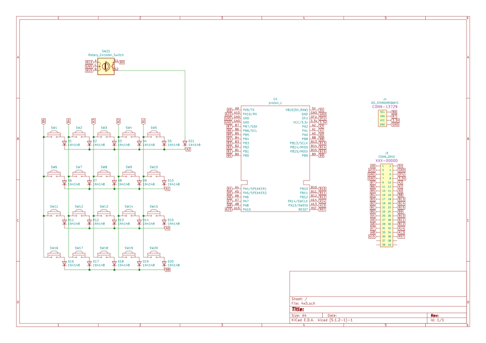A schematic from one of the Dora designs.
The first additions were two rotary encoders that offered programmable knobs that could be used for anything from volume up/down to contrast, brightness, or any other random thing a user would want to re-program a knob to do.
“Any other random thing” was the design driver from there. Our kits have relatively few switches; usually twenty or fewer keys. But the microcontrollers we use can drive full-size keyboards. Meaning that there are a lot of unused pins on the microcontroller that were usually ignored. But with extra space to spare, I added the ability to access all of those pins via right-angle header pinouts. This way, after the kit was built, a user could optionally use the keyboard as a modular experimentation device. Interested in learning how to program split keyboards? No problem; just connect two Doras via the exposed pinouts. Want to learn about how to matrix RGB LEDs? No problem; just hook up the exposed pinouts to a breadboard and start learning.
And on top of that, QMK had just released support for Sparkfun QWIIC connectors which make things like joysticks and displays easier to interface with. So I added a QWIIC connector to the design as well.
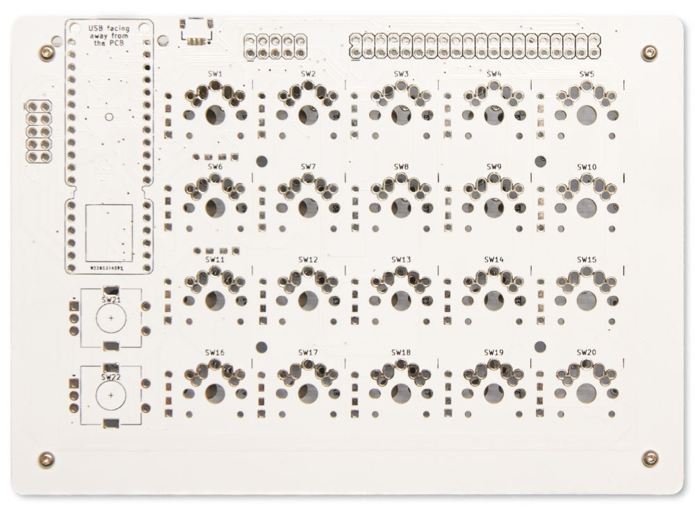The original prototype. Look at that "bezel!"
Once a small batch of the draft PCB was manufactured, it was time for a round of feedback from the cKeys community of volunteers. The main takeaway was that the “bezel” was too big. In the design freedom I felt by no longer being constrained to a compact size, I had gotten sloppy with just how much space I was using and how.
The other key feedback was in regard to the exposed microcontroller and pinouts. Someone suggested the idea of covering these components with clear acrylic. Not only could it better protect these electronic parts, but it also had the potential to be aesthetically pleasing.
I went to work completely removing the bezel, removing some of the extra pinouts, removing one of the two rotary encoders, and ultimately making for a much more compact design. On top of that, I made room for brass standoff holes that would be used to hold laser cut clear acrylic over top of the microcontroller.
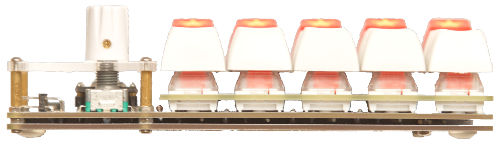Ultra low sandwich/skeleton case.
And finally, I designed a new system for a “sandwich/skeleton” case (a less expensive process of layering PCBs that sandwich together instead of manufacturing a separate case) that was ultra compact and left the keyboard as low to the table as possible.
The final draft of this keyboard was a lean and feature rich soldering kit. The feedback from the cKeys volunteer community was positive and the prototypes that I built received a good response from a usability standpoint. It was time to user test this in a live workshop.
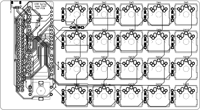Final PCB design.
I had the opportunity to teach up to 30 attendees (more than any cKeys workshop prior) in a 2.5 hour workshop and chose to debut the Dora kit at this event. We sold out of the workshop faster than any workshop we had ever had (and this was double the size of anything previous). At least from a marketing standpoint, this was a design that people really seemed to desire.
Fast forward through the workshop and the results were in. Attendees were enthusiastic to build this keyboard and the first half of the workshop went well. But despite it having personally taken me less than an hour to build one of these kits (I was not the target audience for the workshop), halfway through the workshop, I started to notice signs that the great divide was once again occurring.
Some people were speeding ahead and others were slow going. But then something happened: even the speedier bunch were slowing down. By the end, no one finished early and a quarter of the attendees finished nearly an hour after the workshop had officially ended.
The biggest issue was those extra header pins for the right angle pinouts. Header pins are small and take more time to solder. And I had increased the number of header pins by 50%!
We still had v1 kits available, so we offered a second workshop a few months later (this time with 15 attendees). Again, we sold out in record time. I had taken into consideration the extra time needed to solder header pins. The previous workshop's survey results said people enjoyed the workshop but that some attendees didn’t appreciate going over the scheduled completion time, so this time we advertised it as a longer workshop.
I extended the workshop time to 4 hours instead of the original 2.5 hours. That was extra time beyond what the slowest attendees from the previous workshop had needed to complete the kit. We could save improvements for v2, while still offering v1 workshop kits. Am I making it too obvious that this plan was flawed?
With more time I assured attendees that many of them would likely finish before the allotted time but that since we had people go over time at the last workshop, we extended the time for this workshop.
Yes, we had a few issues with soldering irons failing that slowed us down. But overall, the main difference was that the attendees and me all thought there was going to be plenty of time. So we took our time. And ran out of time, again. This time, a few attendees were still soldering right up to the five hour mark.
Despite the mishaps, this has overall been our most successful kit to date (but our roughest workshop experiences). We regularly get people asking us how they can purchase one of these Dora kits outside of our in-person workshops (so much so that we’re going to sell the v2 kit as a fundraiser this summer).
But it has also been a somewhat painful learning experience. I still face the challenge of designing an aesthetically pleasing keyboard that people want (✅️) while maintaining a relatively streamlined build process for beginner solderers (work in progress). These design challenges are the kinds of things that motivate me and keep me up at night.
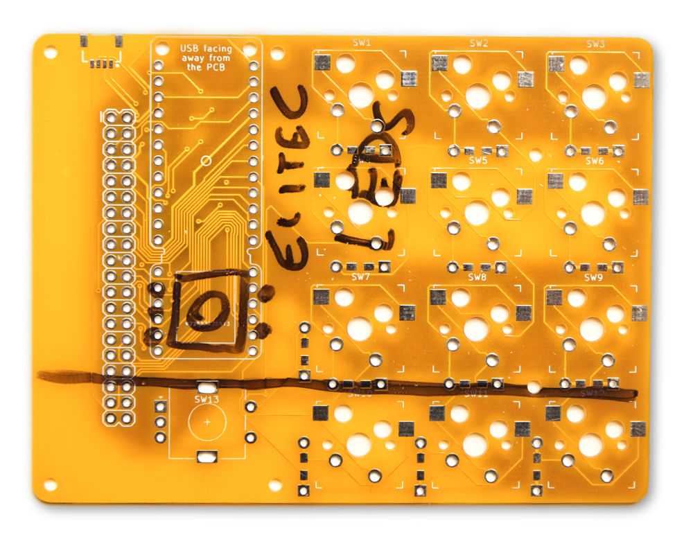Notes on a Dora Mini prototype.
My latest design/business decision is to sell v2 kits with minor improvements during our fundraising sales because people like the form factor. But going forward for workshops, a Dora “mini,” with fewer switches, a smaller microcontroller (with fewer pinouts), and 30% fewer header pins to solder.
Ultimately, future user testing will prove out or destroy this updated design hypothesis. In the meantime, it is back to finishing touches on v2 and v2 “mini.”
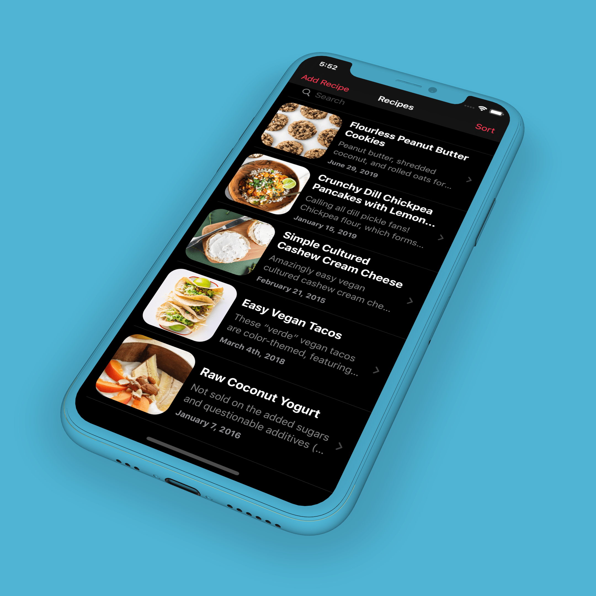
"It starts at the keyboard, and it ends at the far corners of the universe."
Vincent Lowry